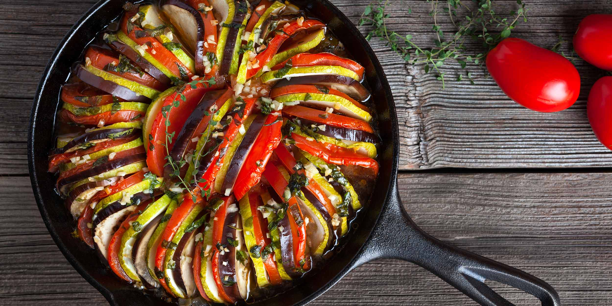

Ингредиенты:
- 1 баклажан
- 1 кабачок
- 2 помидора
- 1 красный перец
- 1 лук
- 2-3 зубчика чеснока
- 100 мл оливкового масла
- Соль и перец по вкусу
- Базилик и тимьян по вкусу
Приготовление:
- Нарежьте все овощи тонкими круглыми ломтиками.
- В глубокой форме для запекания налейте немного оливкового масла.
- Выложите ломтики овощей в шахматном порядке, начиная с краёв и двигаясь к центру.
- Посолите и поперчите, добавьте нарезанный чеснок, базилик и тимьян.
- Полейте оставшимся оливковым маслом.
- Накройте форму фольгой и запекайте в разогретой до 180°C духовке 30 минут.
- Снимите фольгу и продолжайте запекать еще 15-20 минут до золотистого цвета овощей.